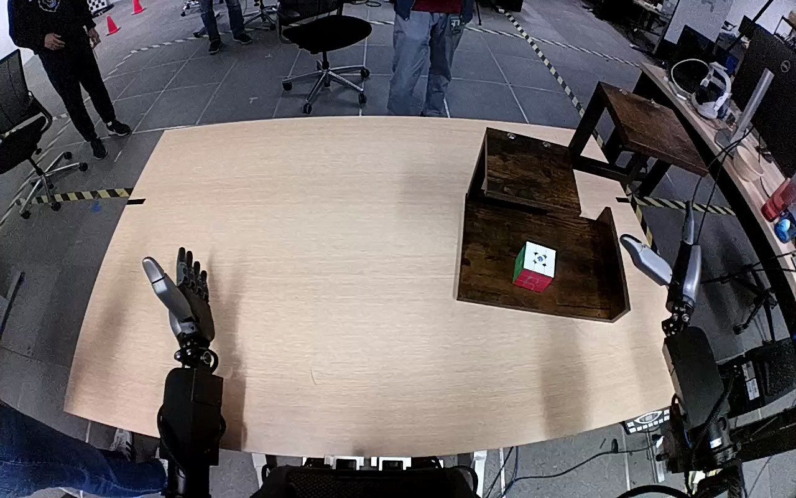

NVIDIA GR1 · 60
Video 60

Visual review action_review.json
{
"prompt_protocol": "humanoid_action_v1",
"prompt_provenance": "visually_authored_from_video_and_initial_frame",
"reviewed_contact_sheets": [
"sheet_001.jpg"
],
"inspected_frame_stride": 2,
"inspected_sampled_frame_count": 60,
"initial_scene": "Forward-facing view from above the robot torso across a table. Both forearms extend from below the image; the right hand is beside a wooden stepped shelf, and the left hand is open over the empty left side of the table. A red, green and white Rubik's cube is on the lowest shelf surface.",
"observed_sequence": [
{
"source_frame_interval": [
0,
16
],
"action": "A person reaches to the shelf and shifts the entire shelf with the cube leftward and closer to the robot; both robot hands remain open and clear of the cube.",
"confidence": "high"
},
{
"source_frame_interval": [
17,
36
],
"action": "The right forearm moves inward toward the cube on the bottom shelf; the left hand remains open and separate.",
"confidence": "high"
},
{
"source_frame_interval": [
37,
72
],
"action": "The right hand surrounds the cube with thumb and fingers, gradually bringing the thumb against the near cube face while the fingers reach around the opposite side; the cube remains on the shelf.",
"confidence": "high"
},
{
"source_frame_interval": [
73,
82
],
"action": "The right thumb and fingers close around the cube and tilt it slightly, securing it for lifting.",
"confidence": "high"
},
{
"source_frame_interval": [
83,
102
],
"action": "The right hand lifts the cube completely clear of the bottom shelf, carries it upward and toward the elevated top surface, maintaining its grasp.",
"confidence": "high"
},
{
"source_frame_interval": [
103,
110
],
"action": "The right hand lowers the cube onto the top shelf, bringing its bottom face into contact with the shelf surface.",
"confidence": "high"
},
{
"source_frame_interval": [
111,
119
],
"action": "The right fingers extend and the hand opens around the placed cube. The cube stays resting on the top shelf while the open right hand remains immediately nearby; the left hand stays unused.",
"confidence": "high"
}
],
"arm_hand_roles": {
"right": "Only manipulating hand: thumb and fingers grasp opposite sides of the cube, lift it from the bottom shelf, move it upward, lower it onto the top shelf and open to release. The hand stays close to the cube at the ending.",
"left": "Open and idle over the left side of the table throughout; does not stabilize the shelf, grasp the cube or assist the right hand.",
"coordination": "Single-hand manipulation with no transfer or bilateral coordination. The early human adjustment moves the shelf only, before the robotic grasp."
},
"anatomical_side_evidence": {
"convention": "The camera looks forward over the robot torso visible along the lower edge, with the forearms attached on its corresponding left and right sides. This is a view aligned with the robot's own forward direction, so the arm emerging at image right is the robot-relative right arm; its thumb faces inward toward the centerline when approaching the cube.",
"confidence": "high",
"uncertainty": null
},
"terminal_state": "The cube rests upright on the elevated top shelf with its white marked face upward and red face toward the robot. The right hand is open and adjacent to the cube, with no withdrawal shown. The bottom shelf is empty and the left hand remains open away from the shelf.",
"uncertainties": [
"The near thumb partly occludes the cube at the ending, so a very light residual touch cannot be excluded; the fingers are visibly open and the cube is supported by the top shelf."
],
"annotation_discrepancies": [],
"evidence_frame_indices": [
0,
38,
54,
78,
90,
104,
112,
119
],
"selected_execution_status": "success",
"inspection_coverage": {
"sampled_frames": "Every second decoded frame from 0 through 118, covering the complete 120-frame sequence.",
"native_resolution_frames": [
38,
54,
78,
90,
104,
112,
119
],
"initial_png": "Source first_frame.png viewed at native 1280x800 resolution."
},
"video_id": "60",
"dataset": "NVIDIA_GR1_100",
"dedicated_review_agent": "review_gr1_60",
"review_source_video": "NVIDIA_GR1_100/60/original/original.mp4",
"source_frame_count": 120,
"source_fps": 20.0,
"native_detail_frames": [
38,
54,
78,
90,
104,
112,
119
],
"world_model_prompt": "The robot uses its right hand to grasp the Rubik's cube between its thumb and fingers on the bottom shelf, lifts it clear, and carries it upward to the top shelf. It lowers the cube onto the top shelf and opens its hand, leaving the cube resting there with the right hand still nearby. Keep the camera fixed; preserve robot geometry, physically valid joint motion, and normal gripper opening and closing.",
"original_task_instruction": "Use the right hand to pick up rubik's cube from bottom level of the shelf to top level of the shelf.",
"selected_segment": {
"start_frame": 0,
"end_frame_exclusive": 120,
"reason": "Complete original single-task reference; no cropping or trimming requested."
},
"source_video_sha256": "b5553da7b606b1ad3d1420b2ad508949342febf4f3c87bee3962072a64414357",
"review_completed_at": "2026-10-13T18:17:13.238765+00:00"
}